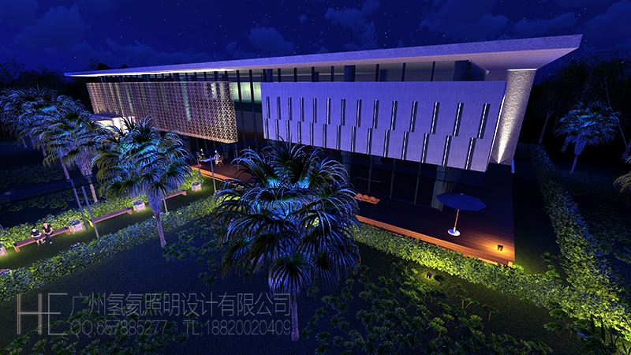
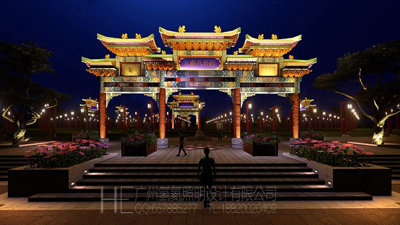
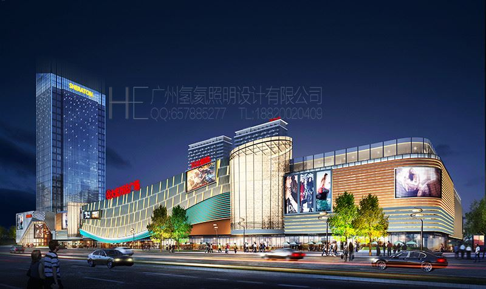
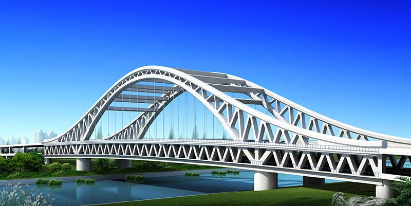
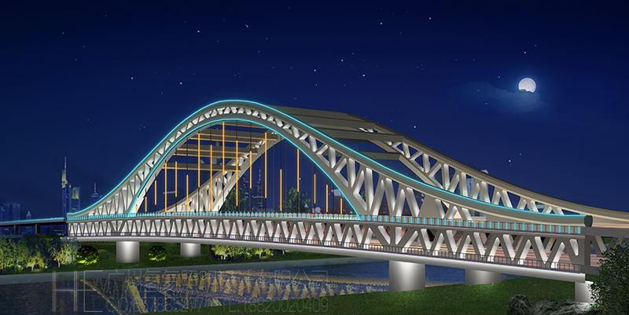
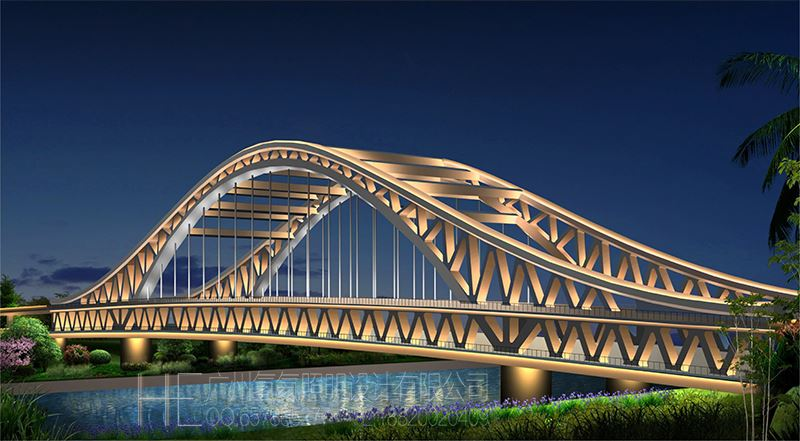
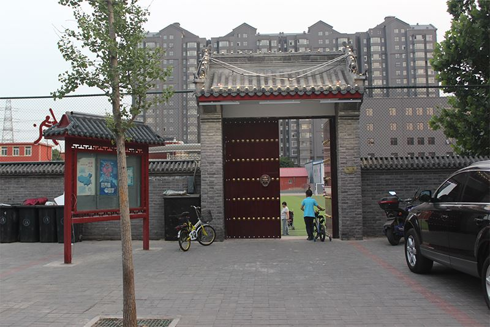
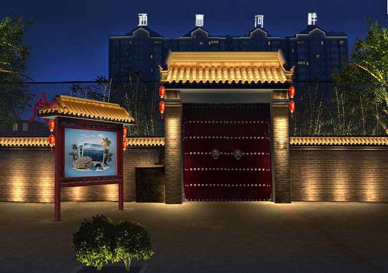
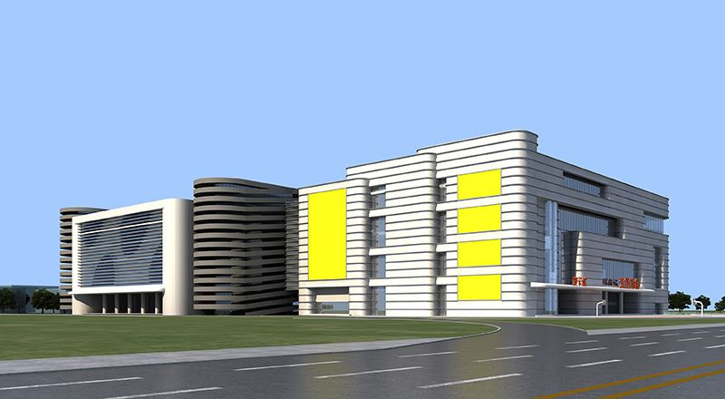
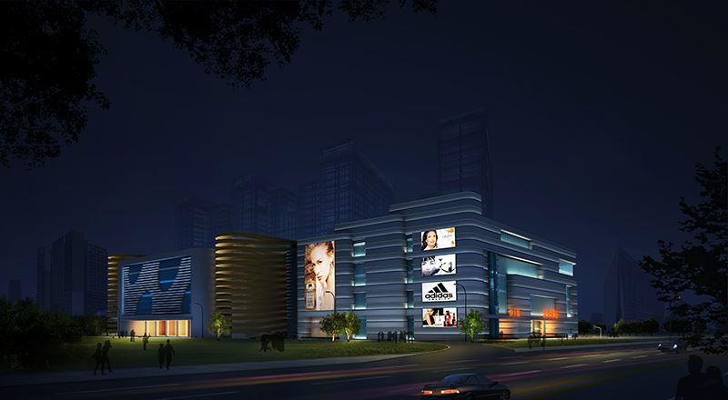

夜景照明亮化行业灯光效果图设计制作方法介绍
-广州氢氦照明设计原创，转载必究-
前言：本文旨在抛砖引玉，如有以偏概全欢迎指正。
目前夜景照明设计行业的亮化灯光效果图通常由三种方式完成制作：
①三维全模渲染夜景效果图（此方法为效果图公司制作人员常用，前期使用三维建模软件完成模型和场景配景的空间制作，然后赋予模型材质灯光调节参数最后渲染输出成品图，后期采用PS处理整体画面效果。此方法优势是：灯光效果逼真且画面空间感强，批量制作角度多数量多的效果图会比较高效节省时间。劣势是：需要花费大量时间精力去构筑建筑或景观三维模型以及空间配景环境的制作，且对制作人员的三维软件技术掌握要求高，制作单张效果图会非常费时费力）,如下图:
图1 仁恒置地售楼部泛光照明3D效果图

图2 九曲河夜景亮化3D效果图

②PS制作夜景灯光效果图（此方法为照明行业公司设计人员常用，其中又可分为2种方式：一种是由甲方公司提供建筑或景观的日景效果图,乙方照明设计人员运用PS软件将白天效果图转化为夜景照明效果图。此方法优势是：能最大化利用甲方的原始效果图纸资料，制作效率很高能快速出图。是照明效果图制作最普遍也最常用的制作方式。如下图：
图3 万达广场 建筑日景效果图

图4 万达广场 照明设计效果图

劣势是：取决于制作者水平的高低层次，最后呈现出的效果也可能参差不齐。同一张灯光效果图经由不同水平人员制作的亮化效果精美程度完全不同，如下图:
图5 京杭大运河 桥梁日景效果图

图6 京杭大运河 桥梁亮化效果图1

图7 京杭大运河 桥梁亮化效果图2

第二种是使用数码相机现场勘察拍摄的白天照片,乙方照明设计人员运用PS软件将白照片转化为夜景照明效果图。此方法优势是：相机拍摄的照片环境真实，还原度高。劣势是：由于照片里的环境都是真实的，有些场景就比较脏乱，导致使用照片处理的灯光效果图精美程度通常不如使用建筑效果图处理得漂亮。此方法也是照明效果图常用制作方式之一。如下图：
图8 北京通惠河畔 现场照片

图9 北京通惠河畔 灯光效果图

③PS+3D制作夜景灯光效果图（此方法为照明行业公司设计人员偶尔使用，要求设计人员既要掌握PS处理后期效果图相关技术，同时还要懂得使用三维设计软件。具体方法是前期通过三维软件渲染模型输出，配景环境部分工作由PS后期制作合成。此方法优势是：融合了ps和3D软件两部分各自的优势，修改调整比较容易。在实现灯光效果逼真且画面空间感强的同时能提升作图效率。劣势是：在甲方没有模型提供的情况下，需自己建模，如果相关人员没有三维软件基础，作图效率会比较低。如下图：
图10 广州沃野商业广场建筑3D模型

图11 广州沃野商业灯光设计效果图

KEY WORD关键词：建筑照明设计 景观灯光设计 楼体亮化设计 古建筑照明 灯光效果图制作